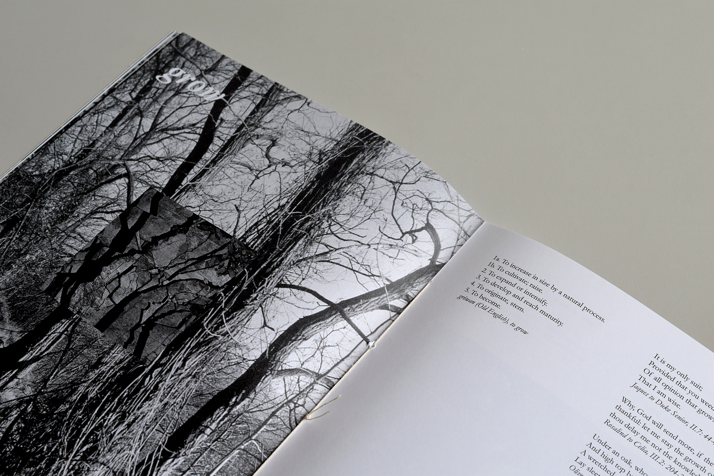
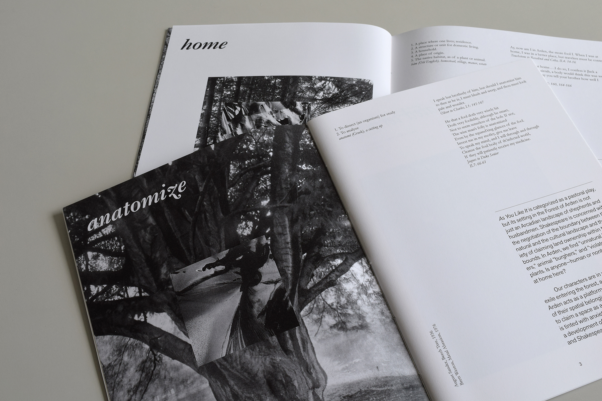

As You Keep It
Early Modern Ecologies, Jane Tylus
Fall 2020
This book has three components: a series of photographs, a glossary of terms and citations, and a short essay on Shakespeare’s As You Like It. The written essay considers the negotiation of the boundary between natural and unnatural land in Shakespeare’s pastoral play.
The glossary seeks not to be encyclopedic, but to draw out key terms from the text, related to the topic of the essay, and allow their rich multiplicity of meanings to stand alone and be read as a parallel investigation. When these words appear in the text they are bolded to invite the reader to turn to the corresponding glossary entry.
The accompanying photos use the overlay of images to suggest the always unstable boundary between the natural and the unnatural. The overlapping pairs consist of a base image by the German documentary photographer August Sander from his series on forests and a top image by varying photographers that investigates artifice—from images of abrasions in steel to peeling paint.
As a project, the book delights in details, from close reading of the text to close looking at images, and uses multiple ways to consider and challenge the question: Where is the boundary of the unnatural? Does it really exist at all?

